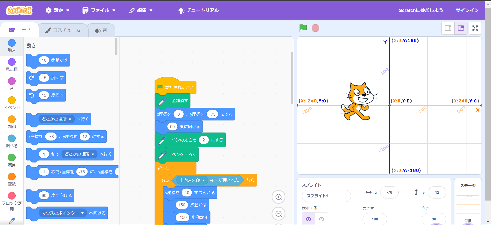
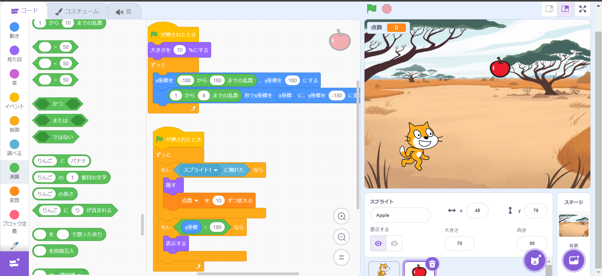

1週目のレポート ： 公大高専１年実習I-1
2a班02番 mojiji
第1週目
1-1 サイエンスアート

1.内容
スクラッチを使って線を書くプログラムを今週は行った。
まず初めに簡単なプログラムで円を描き、次に直線で円を描いた。
上図は、直線で円を描いたのち、矢印キーでねこを操作し、マウスを押すと線がすべて消える、といったプログラムを書いた。
2.感想
スクラッチの拡張機能を使ったことが今までなかったので、新しいことを学ぶことができた。
1-2 ゲーム

1.内容
ねこを左右の矢印キーで操作することができ、りんごを獲得するとリンゴは消え、点数が１０点づつ増加していくといったものを作成した。
2.感想
過去にスクラッチで遊んだ知識が今回生きたように思う。
配られたプリント通りにはいかなかったが、自分で考えて作成するよい機会になったと思う。
1-3 ホームページ作成
私のホームページ
1.内容
ないようないよう
2.感想
かんそうかんそう